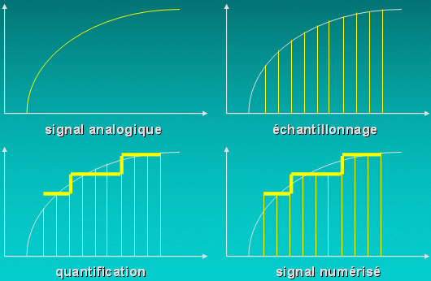
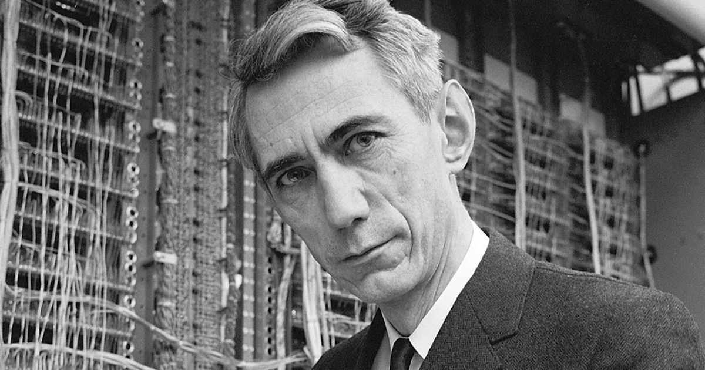

Le monde numérique
RetourLe monde numérique
L'arrivée du numérique a complètement changé notre façon d'utiliser des données. Il est maintenant possible de représenter tous les types d'information sur un même support, grâce au processus de numérisation.
Ce processus entraine en revanche une perte d'information, mais qui peut parfois être déduite mathématiquement. Cette information peut être traitée efficacement grâce à l'informatique moderne
Le numérique tel qu'on le connaît aujourd'hui est l'application d'un modèle théorique établi par Claude Shannon en 1948 : la théorie de l'information.
